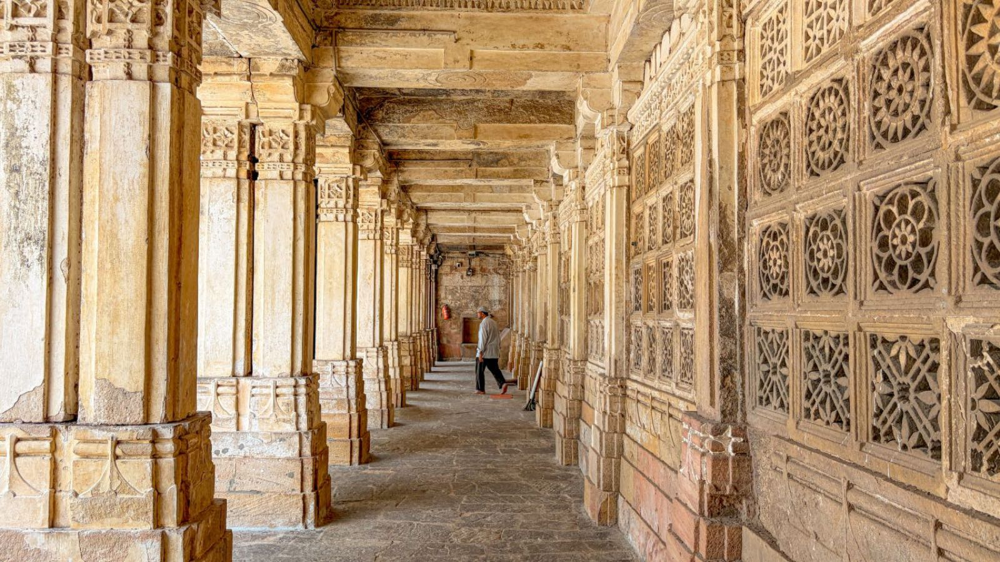
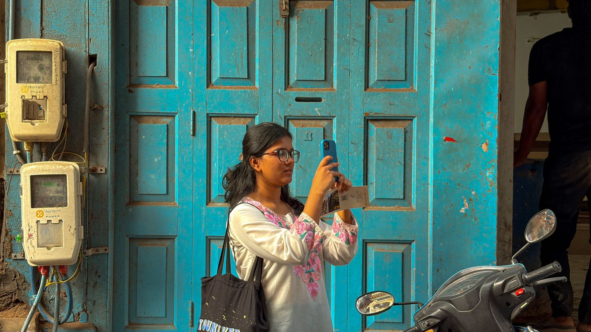

Drag · Scroll · ← →
One walk through Ahmedabad, from the quiet stone courts of its old tombs and mosques into the pols and bazaars that still crowd around them. Drag the ring to look around, or open any frame full size.


For centuries, the carved stone Jaalis of Sarkhej Roza allowed us to observe the world unseen, elegantly filtering the harsh sun and framing reality through perfect geometry. Today, our view has shifted from these ancient stone voids to glowing digital screens. The smartphone has become our modern Jaali, mediating the chaotic flow of pop culture and curating our everyday lives.
Just as historical architects used stone screens to control what entered a physical space, today’s invisible algorithms use digital screens to control our mediated reality. Where the sultans once sought a quiet refuge from the city, we now carry the relentless noise of the global bazaar in our pockets. The permanence of carved sandstone has been replaced by the fleeting, ephemeral glow of viral trends and endless notifications.
We scroll through these feeds feeling connected to the masses, yet we sit physically isolated behind our own private screens. We are no longer just the silent observers hidden behind the lattice. We are simultaneously the performers trapped within the digital grid. As we gaze through these fragmented pixels, we must ask ourselves: do these new windows expand our world, or simply build a tighter cage?
What is your modern Jaali filtering out?
“The Digital Jali” explores the popular culture concept of mediated reality by comparing the ancient stone lattice windows (Jaalis) of Sarkhej Roza to the modern smartphone screen. Historically, these carved stone screens acted as physical filters that managed the harsh sun and allowed those inside to safely observe the outside world unseen, strictly framing their view of reality.
For my creative artifact, I designed a video collage that visually replaces the historical view through these ancient stone voids with fast-paced, chaotic modern smartphone content, such as social media feeds and pop culture videos. By forcing modern digital life into this rigid, historical architectural framework, the artifact makes the invisible filter of our phones visible.
It provokes the audience to realize that just as historical architects designed stone to control what was seen, today’s digital algorithms curate our feeds, leaving us to reflect on what our modern screens are filtering out of our daily lives.
The walk was about seeing the old city whole: the monuments and the people who live and work around them. These are the four ideas I kept coming back to while shooting and editing.